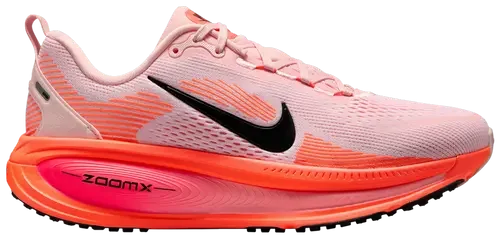

The Vomero 18 offers greater cushioning with 6mm more midsole height compared to the Vomero 17, featuring a stack height of 36mm in the forefoot and 46mm in the heel. With a new foam collar, the Vomero 18 puts cushioning front and center for a feel that’s 18% softer than the Vomero 17. The increased rocker allows for a smoother heel-to-toe transition.